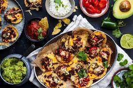

Recipe
Start with heating the oven to 225˚C. Get on heating a pan and smack that meat in there for a good roast. Mix some hella nice ingredience that makes the nacho 10x more tastier like grass Onion, Garlic and Chilli. Now give that bich some seasoning. A good mix of Salt, Pepper and a little bit Cumin. Now prepare a ovenproof dish with some nacho chips at the bottom and sides. Throw that delicious meat in there. Drizzle some kg chees on top of that smackaliciousness pice, (if u want u can have some Nacho chips on top). Now put it in the oven and watch that bitch for 5-10 mins! Then take it out and dinner is served. (TIP: throw on some jalapenos, taco sauce, guacamole sourcream fro the perfect taste bomb)

Now doesn´t this look like pictures from heaven!
Easy, Fast and Delicious!
- It´s a friday eve favorite!
- It´s the ultimate flavor bomb!
- Invite ur friends or family and share ur delicious creation!
- What are you waiting for!
If you have never tasted Nacho, this is the recipe for you!
After you´ve tried this piece of foodgasm, you would basicly have fulfilled ur lifes purpos. Trye it with ur pet!